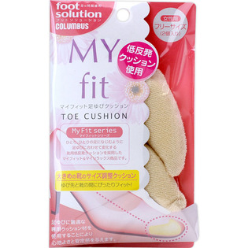

返回列表
产品名称：フットソリューション マイフィット足ゆびクッション

コロンブス フットソリューション マイフィット足ゆびクッション ＿
メーカー コロンブス
JANコード 4971671947368
商品の特徴
女性用 フリーサイズ
低反発クッション使用
大きめの靴のサイズ調整クッション
ゆび先と靴の間にぴったりフィット！
足ゆびに最適な専用クッション材を使用することにより心地よさと安定感を与えます。
成分・分量
綿、ポリエステル、低反発ウレタン
用法及び用量
左右の形を確認してから靴のつま先部分に入れて下さい。